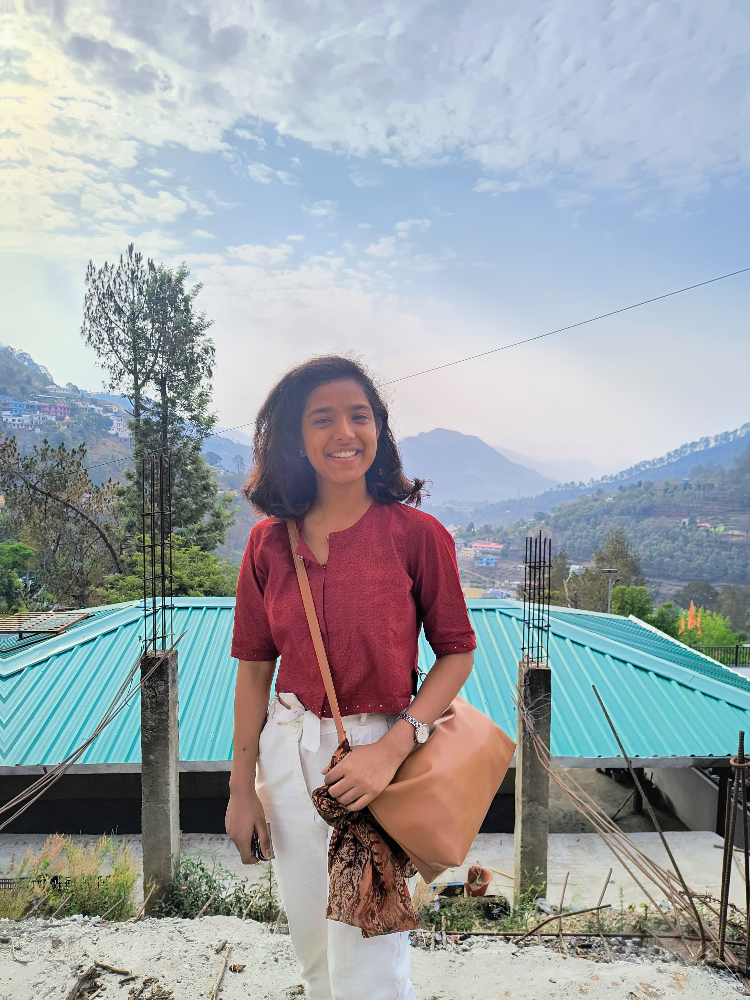

Senior Executive — Academic Mentor
Mentor around 50 students and build Excel performance trackers; 60% have shown measurable progress. Streamlined coordination and developed an AI-assisted result calculation system using Copilot and Claude.
Product thinking, grounded in science
I’m Kanu Priya Dhabhai, a chemistry-trained strategist working across research, mentoring, and product thinking. I enjoy building structured action plans to resolve complex challenges.

A little science applied in building every startegy.
Good products begin with better questions, not louder answers.
I studied chemistry at IISER Bhopal, where research trained me to work carefully with evidence, explain complex ideas, and keep moving when the answer is not obvious.
Today, as a Senior Executive and Academic Mentor at SciAstra, I mentor around 50 students, build performance trackers, share insights with leadership, and helped develop an AI-assisted result calculation system. I’m drawn to product work that combines the research mindset with practical, measurable outcomes.
Ground decisions in research, data, and the details people actually share.
Translate multi-step challenges into clear workflows and useful tools.
Communicate and collaborate to come up with insights as shared progress.
A product-focused exploration of user needs, problem framing, and a path toward a useful solution.
PRDto_github_MASAIA hands-on project exploring interaction, feedback, and the small details that make play feel good.
new_game_dev_practiceUsing AI in Product Management
AI_PMMentor around 50 students and build Excel performance trackers; 60% have shown measurable progress. Streamlined coordination and developed an AI-assisted result calculation system using Copilot and Claude.
Worked on palladium-catalysed C–H functionalization of ferrocene and enantioselectivity testing, with a focus on reproducible records and clear experimental workflows.
Analysed genetic datasets on silver pheasant population history; also supported literary research through structured technical writing and analytical editing.
Thesis on charge-transfer cocrystals, designing materials with targeted electronic properties through crystallisation workflows and crystallographic analysis. Co-authored a 2026 CrystEngComm publication on noncovalent interactions in organofluorine compounds.
05 / Contact
I’m always glad to connect about thoughtful product work.